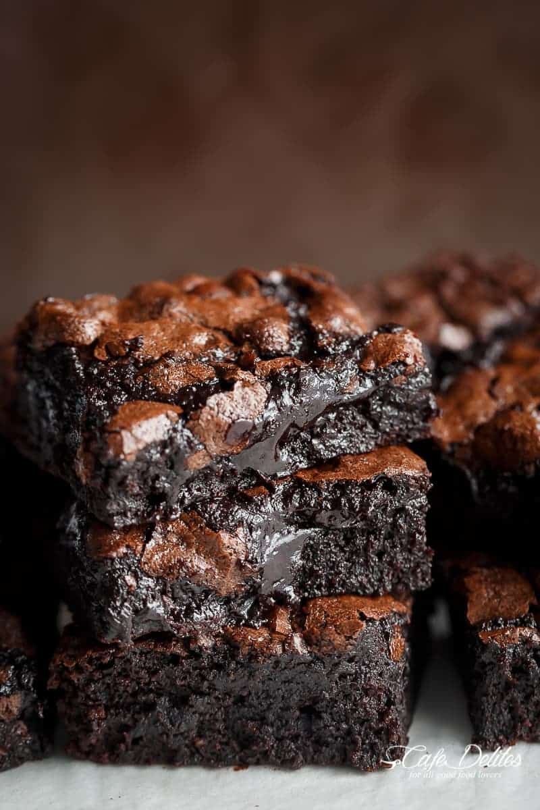

Home
Fudgy Brownies

Description
These fudgy brownies are rich, moist, and decadent. They are made with a combination of butter, sugar, eggs, cocoa powder, and flour, which gives them a dense and chewy texture. The brownies are studded with chocolate chips, which add extra richness and flavor. They are perfect for a special occasion or a sweet treat any day of the week!
Ingredients
- Butter
- Sugar
- Eggs
- Cocoa powder
- Flour
- Chocolate chips
Instructions
- Preheat the oven to 350°F (180°C).
- Grease and line a 9x13-inch (23x33 cm) baking pan with parchment paper.
- In a large bowl, melt the butter in the microwave or on the stovetop.
- Add the sugar and eggs to the melted butter and whisk until combined.
- Sift in the cocoa powder and flour and fold into the wet ingredients until just combined.
- Stir in the chocolate chips.
- Pour the batter into the prepared baking pan and smooth the top with a spatula.
- Bake in the preheated oven for 25-30 minutes, or until a toothpick inserted into the center comes out with a few moist crumbs.
- Remove the brownies from the oven and let them cool completely in the pan.
- Cut into squares and serve.